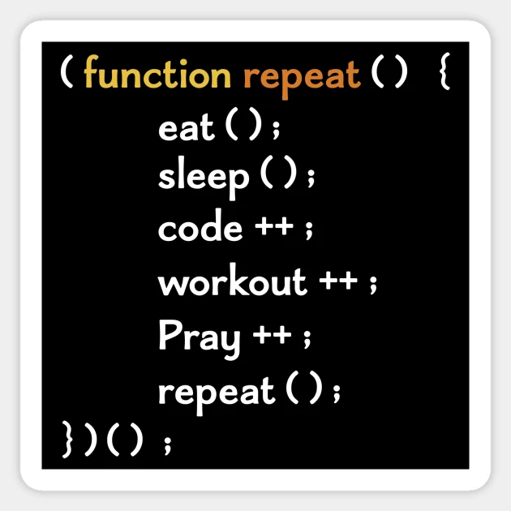

Functional Programming is a way to write clean and maintainable software.
Well, I am glad “you” asked. Clean Code is like having a clean room. You maintain it for when friends come over .You may also want to add in some new features to your room like a new lamp, or a new drawer to put your things in. Clean Code is easier to Maintain and add on to down the line in the future. For functional Programming, The beauty is in the eye of its simplicity. We call it a first class class function. A first class function has the ability of standing alone and being treated independently. Flexibility and usability of functional Programming has allowed Java and C# to include first class support.
Underscore is the functional programming style I have experience in, thanks to ICS 314. Below is 2 code snippets. The first is not using functional programming and the second is using it.
for (i = 0; i < someArray.length; i++) {
var someThing = someArray[i];
// my hand already hurts from all this damn typing
if (someThing.isAwesome === true) {
result.push(someArray[i]);
VS
var result = _.filter(someArray, function(someThing) {
return someThing.isAwesome === true;
Already you can see 2 lines vs 5 lines. Now that may not seem like a big deal, but what if a different array is used and you wanted to do something similar in later code, 25 times. 25 times 5 is 100, where 25 times 2 is 50. The first snippet you would possibly need another for loop and if statement. In Underscore, you would only need to add onto the .filter function, or incorporate another one of Underscores function in another variable. Underscore is not only useful in for loops, but in any kind of loop(even while loops). You can use functional programming like the above example to perform a calculation with simpler code. There is a library on the functions you can use the link is below if you want to give it a try. http://underscorejs.org/
For loops are technically faster than functional programming. But you as a developer have to make the choice, do I want to throw in a bunch of if statements into my for loop? Or do I want to focus on the future of my application with functional programming. An example of a project that I use functional programming for is my Embryo Analysis Project, which is listed on my projects page if you would like to know more about it. I am actually refactoring the project now and saved the application almost 80 lines of code with the use of a function I created that displays the data using functional programming.
Give Functional Programming a try, it may save a life
Thank you for Reading my essay!